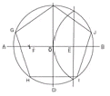
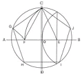
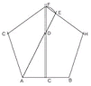
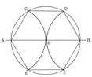
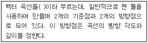
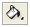
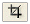

컴퓨터그래픽스운용기능사 (2009-03-29 기출문제)
1과목: 산업디자인 일반
1. 반복적인 유니트로 구성되어 함께 조립하거나 서로 교차할 수 있는 디자인 경향은?
- 비쥬얼 디자인
- 모듈러 디자인
- 콤펙트 디자인
- 바이오 디자인
(정답률: 74%)

2. 다음 중 신제품개발의 절차가 바르게 연결된 것은?
- 아이디어 수집→아이디어 심사→개념발전과 제품 시험→마케팅전략 형성→사업성 분석→제품 개발
- 아이디어 수집→아이디어 심사→사업성 분석→마케팅전략 형성→개념발전과 제품시험→제품 개발
- 아이디어 수집→사업성 분석→아이디어 심사→마케팅전략 형성→개념발전과 제품시험→제품 개발
- 아이디어 수집→사업성 분석→아이디어 심사→제품 개발→개념발전과 제품시험→마케팅전략 형성
(정답률: 43%)
3. 제품디자인의 설명 중 잘못된 것은?
- 과학, 기술, 인간, 환경 등이 공존하는 분야이다.
- 생산 가능한 형태, 구조, 재료 등을 잘 선택한 설계이어야 한다.
- 인간과 자연의 매개 역할로서 구조적 장비이다.
- 인간의 감성에 맞춘 순수한 예술이어야 한다.
(정답률: 84%)
4. 실내 디자인에 있어 미적 효용성을 더해주는 액센트적 역할을 하는 실내 소품 선택시 고려할 사항과 거리가 먼 것은?
- 실내 소품은 개인의 개성을 나타낼 수 있어야 한다.
- 소품은 지나치게 많이 사용하면 혼란을 주기 때문에 주의해야 한다.
- 소품은 주변 물건과의 디자인 성격을 잘 고려하여 적절하게 배치해야 한다.
- 소품은 거는 벽은 되도록 진한 원색이나 무늬가 많은 것을 사용하여 주의를 끌어야 한다.
(정답률: 88%)
5. 마케팅 믹스(Marketing Mix)의 구성요소가 아닌 것은?
- 제품
- 영업
- 유통구조
- 판매촉진
(정답률: 63%)
6. 실내디자인 프로세스를 조사 분석 단계와 디자인 단계로 구분할 때 디자인 단계에 속하는 것은?
- 아이디어 스케치
- 문제의 인식
- 정보의 분석
- 정보의 수집
(정답률: 86%)
7. 제조자와 소비자를 연결해 주는 촉진제가 되며, 유통과정에서 제품을 보호하는 가능을 가져야 하는 디자인은?
- 편집 디자인
- 포장 디자인
- 광고 디자인
- 기업 이미지 디자인
(정답률: 93%)
8. 표현양식에 의한 일러스트레이션의 분류 중 부적합한 것은?
- 점묘화적인 일러스트레이션
- 구상적인 일러스트레이션
- 추상적인 일러스트레이션
- 초현실적인 일러스트레이션
(정답률: 56%)
9. 아르누보의 신예술이라는 의미로 전통적 양식에서 탈피하고 새로운 미를 창조하려는 신예술 운동을 주장한 인물은?
- 윌리암 모리스(Morris.W)
- 앙리 반 데 벨데(Van de velde.Henri)
- 헤르만 무테지우스(Muthesius.H)
- 구스타프 클링트(Klimt.G)
(정답률: 59%)
10. 디자인의 원리에 대한 설명 중 잘못된 것은?
- 통일감은 다양한 디자인 요소들을 하나로 묶어준다.
- 대상의 의미나 내용을 강조하는 수단으로 반복이 쓰인다.
- 디자인이나 회화의 구도를 결정하는데 황금비가 많이 쓰여 졌다.
- 각 부분이 동일하고 간격이 일정할 때 강한 리듬감이 생긴다.
(정답률: 61%)
11. 1981년에 창립되었고 일상 제품을 기능적인 모더니즘의 형태로 디자인하기를 거부하고 더욱 장식적이며 풍요롭게 디자인하려 했던 이탈리아 디자인 단체는?
- 멤피스
- 퓨리즘
- 아르데코
- 아라베스크
(정답률: 53%)
12. 다음 중 편집디자인 요소로서 가독성과 불가분의 관계를 갖는 것은?
- 타이포그래피(Typography)
- 포토그래피(Photography)
- 컬러디자인(Colordesign)
- 플래닝(Planning)
(정답률: 83%)
13. 다음 중 정신적인 표현이 주가 되는 디자인 분야는?
- 인테리어 디자인
- 시각전달 디자인
- 제품디자인
- 디스플레이 디자인
(정답률: 76%)
14. 일반적으로 가정용품에 속하는 것으로 디자이너의 아이디어나 조형적 감각표현이 자유로이 발현되는 제품디자인의 분류는?
- 소비자 제품
- 생산자 제품
- 자본재 또는 내구재
- 서비스업용 제품
(정답률: 68%)
15. 소비자가 물품을 구입하기까지는 다양한 심리적 변화를 거쳐야 하며 이것을 구매 심리 과정이라 한다. 구매 심리과정이 올바르게 표현된 것은?
- 주목-흥미-욕망-기억-구매행위
- 흥미-주목-기억-욕망-구매행위
- 주목-욕망-흥미-구매행위-기억
- 흥미-기억-주목-욕망-구매행위
(정답률: 71%)
16. 다음 중 에디토리얼 디자인에 해당되는 것은?
- 북 디자인
- 포스터 디자인
- 패키지 디자인
- POP 디자인
(정답률: 64%)
17. 수익 유무에 따른 실내 디자인의 분류에 속하는 것은?
- 주거공간
- 영리공간
- 업무공간
- 특수공간
(정답률: 66%)
18. 게슈탈트(gestalt) 요인이 아닌 것은?
- 시각성의 요인
- 유사성의 요인
- 폐쇄성의 요인
- 근접성의 요인
(정답률: 72%)
19. 다음 중 기하직선형 평면에 대한 설명은?
- 질서가 있는 간결함, 확실, 명료, 강함, 신뢰, 안정 등을 나타낸다.
- 강력, 예민, 직접적, 남성적, 명쾌, 대담, 활발함 등을 나타낸다.
- 수리적 질서가 있으며 명료, 자유, 확실, 고상함, 짜임새, 이해하기 쉬운 점 등을 나타낸다.
- 우아하고 부드럽고 매력적이며 불명확, 무질서, 방심, 단정치 못함, 귀찮음 등을 나타낸다.
(정답률: 52%)
20. 다음 중 대비에 대한 설명으로 잘못된 것은?
- 서로 다른 부분의 조합에 의하여 생기는 것이다.
- 시각적 형태 강약에 의한 형의 감정 효과이다.
- 형태, 크기, 색채, 질감, 방향, 위치, 공간, 중량감의 대비 등이 있다.
- 숲속의 나무, 해변의 모래, 바다의 파도 등 자연 속에서 그 예를 찾을 수 있다.
(정답률: 71%)
2과목: 색채 및 도법
21. 유채색의 연변대비에 관한 설명 중 잘못된 것은?
- 동시대비에 속한다.
- 자극이 접해진 부분에서 대비현상이 일어난다.
- 두 색 사이에 유채색 테두리를 둘러 억제한다.
- 눈부신 현상(섬광효과)을 동반하기도 한다.
(정답률: 58%)
22. 다음 중 고대 그리스 국왕의 복식색으로 사용되기도 하였던 색으로, 연상 감정에서 우아한 느낌의 색은?
- 파란색
- 노란색
- 청록색
- 보라색
(정답률: 78%)
23. 다음 중 타원을 작도하는 방법이 아닌 것은?
- 등간격에 의한 나선(와선)을 이용하는 방법
- 그려질 타원의 장축과 단축을 이용하는 방법
- 두 원을 연접시켜 그리는 방법
- 두 원을 격리시켜 그리는 방법
(정답률: 56%)
24. 다음 중 색료를 혼합해서 만들 수 없는 색은?
- 주황
- 노랑
- 녹색
- 남색
(정답률: 67%)
25. 물체가 없어진 후에도 얼마 동안 상이 남아 있는 현상은?
- 상상
- 환상
- 잔상
- 추상
(정답률: 91%)
26. 도면에서 실물보다 확대하여 그린 것은?
- 축척
- 현척
- 배척
- N.S
(정답률: 84%)
27. 다음 색 중 후퇴색으로 가장 적합한 색은?
- Red
- Yellow
- Purple
- Orange
(정답률: 80%)
28. 한 변이 주어진 정오각형을 그린 평면 도법으로 옳은 것은?




(정답률: 55%)
29. 어떤 조명광이나 물체색을 오랫동안 보면 그 색은 선명해 보이지만 그 밝기는 낮아지는 현상은?
- 색순응
- 색반응
- 색조절
- 명시성
(정답률: 79%)
30. 다음 투시도에 대한 설명 중 틀린 것은?
- 물체를 보고 그 형상을 판별할 수 있는 범위를 시야라 한다.
- 시점을 정점으로 하고 시중심선을 축으로 하여 꼭지각 60˚의 원뿔에 들어가는 범위를 시야라 한다.
- 큰 것을 그릴 때는 시거리를 짧게 그려야 한다.
- 시야의 넓음은 시거리에 의해서 정해진다.
(정답률: 65%)
31. 자연광에 의한 음영 작도에서 평행하게 비칠 때의 광선은?
- 측광
- 배광
- 역광
- 음광
(정답률: 59%)
32. 정투상도법에서 제3각법을 기준으로 정면도, 평면도, 우측면도를 그릴 때 잘못된 설명은?
- 각 도면의 위치는 측면도를 기준으로 한다.
- 우측면도는 정면도를 기준으로 우측에 있다.
- 정면도와 평면도는 가로의 크기가 동일하다.
- 정면도와 우측면도는 세로의 크기가 동일하다.
(정답률: 60%)
33. 색의 3속성을 3차원 공간에 계통적으로 배열한 것은?
- 색상띄
- 그라데이션
- 스펙트럼
- 색입체
(정답률: 66%)
34. 다음 중 인접색의 조화에 해당되는 것은?
- 노랑-빨강-파랑
- 연두-파랑-보라
- 귤색-주황-다홍
- 녹색-파랑-자주
(정답률: 82%)
35. 색채의 무게감에 관한 설명 중 틀린 것은?
- 가볍게 느끼도록 운반상자의 색을 흰색으로 하였다.
- 권위를 나타내기 위해 의복의 색을 남색으로 하였다.
- 중후한 느낌을 주도록 자동차의 색을 검정색으로 하였다.
- 안정적인 실내공간을 연출하기 위해 바닥을 노란색으로 하였다.
(정답률: 78%)
36. 치수 기입시 주의 사항 중 틀린 것은?
- 도형의 외형선이나 중심선을 치수선으로 대용해서는 안 된다.
- 치수는 원칙적으로 축척 치수를 기입한다.
- 서로 관련이 있는 치수는 될 수 있는 데로 한 곳에 모아서 기입한다.
- 치수는 계산을 하지 않아도 되게끔 기입한다.
(정답률: 43%)
37. 색의 혼합에 설명으로 잘못된 것은?
- 원색이란 다른 색을 혼합해도 얻을 수 없는 독립된 색으로 3원색의 혼합에 의해 여러 가지 색을 만들어 낼 수 있다.
- 색광의3원색을 혼합한 중간색(2차색)은 색료혼합의3원색과 같다.
- 빛을 가하여 색을 혼합하면 빛의 양이 증가하여 혼합한색이 원래의 색보다 밝아진다.
- 색광의3원색을 모두 혼합하면 검정색이 되고, 색료의3원색을 모두 혼합하면 흰색이 된다.
(정답률: 71%)
38. 빨간색 벽면을 빨강에 흰색을 같은 양으로 섞은 색으로 칠하였다. 이 때 색의 변화를 바르게 설명한 것은?
- 빛의 반사도가 균일하게 모두 반사되었다.
- 빨강의 기미가 없는 무채색으로 되었다.
- 색의 선명도에 변화를 주어 채도가 낮아진다.
- 표면의 밝기에 관련된 것으로 명도가 낮아졌다.
(정답률: 67%)
39. 물체의 내부구조가 복잡하여 잘 보이지 않을 경우, 필요한 부분을 절단한 것으로 가정하여 그리는 것은?
- 단면도
- 평면도
- 배면도
- 전개도
(정답률: 82%)
40. 인상파 화가들이 사용한 점묘법과 같은 시각적 혼합이라고 할 수 있는 색채의 혼합은?
- 가산혼합
- 회전혼합
- 감산혼합
- 병치혼합
(정답률: 79%)
3과목: 디자인 재료
41. 다음 중 필름의 감광도를 나타내는 국제표준화기구의 표기법은?
- ASA
- DIN
- JIS
- ISO
(정답률: 85%)
42. 일정한 온도가 되면 원래의 형상으로 되돌아가는 금속으로 화재경보기 및 달 표면에 세우는 우산 형태의 파라볼라(Parabola) 안테나 등에 이용되는 합금은?
- 형상기억합금(Shape memory alloy)
- 소결 합금
- 수소 저장 합금
- 아모르퍼스합금(Amorphous)
(정답률: 79%)
43. 펄프에 기계적 처리를 하여 강도, 투명도, 축감 등을 용도에 적합하도록 하는 종이의 제조 공정은?
- 착색
- 충전
- 사이징
- 고해
(정답률: 50%)
44. 아트필름 또는 스크린 톤의 착색재료를 사용하여 지정된 부분에 압착하여 표현하는 렌더링 기법은?
- 에어브러시 렌더링
- 마커 렌더링
- 아크릴 렌더링
- 필름 오버레이 렌더링
(정답률: 66%)
45. 동물성 접착제가 아닌 것은?
- 아교
- 어교
- 알부민 접착제
- 아라비아 고무풀
(정답률: 72%)
46. 종이의 사이즈는 한국산업규격으로 정해진 A열과 B열이 있다. 다음 A열 규격 중 297mm×420mm인 것은?
- A1
- A2
- A3
- A4
(정답률: 81%)
47. 자연 자원과 인간의 수요를 엮고 있는 하나의 시스템으로서 디자인 재료와 밀접한 상호 관계를 맺고 있는 것은?
- 형태, 제품, 생산
- 물질, 에너지, 환경
- 물질, 제품, 응용
- 재질, 생산, 구조
(정답률: 73%)
48. 스트리퍼플(Strippable) 페인트의 설명으로 잘못된 것은?
- 도장재의 더러움 방지를 위해 일시적으로 사용한다.
- 필요할 때 간단히 벗겨낼 수 있다.
- 비닐계 수지이다.
- 얇게 도장해야 한다.
(정답률: 63%)
4과목: 컴퓨터 그래픽스
49. 모니터의 출력 시스템간의 색상 차이를 보정하기 위한 작업을 지칭하는 말은?
- 디티피(DTP)
- 하프톤 스크린(Halftone Screen)
- 캘리브레이션(Calibration)
- 리터칭(Retouching)
(정답률: 70%)
50. 다음 설명의 ( )에 적합한 용어는?

- 히든라인(Hiddenline)
- 벡터(Vector)
- 베지어 곡선(Beziorcurve)
- 스플라인(Spline)
(정답률: 71%)
51. 3D 입체 프로그램에서 매핑(Mapping)을 가장 잘 설명한 것은?
- 2D 이미지를 3D 오브젝트 표면에 덮히게 하는 것
- 2D로 된 지도나 도형을 3D 입체로 전환하는 것
- 3D 입체물을 여러 각도에서 단면을 볼 수 있도록 2D의 수치를 기입하는 것
- Extrude한 입체를 다시한번 Revolve 시키는 것
(정답률: 62%)
52. 입체 드로잉 프로그램에서 입체물을 표시하는 X, Y, Z 좌표의 이미는?
- X : 폭, Y : 높이, Z : 깊이
- X : 폭, Y : 높이, Z : 면적
- X : 높이, Y : 폭, Z : 깊이
- X : 점, Y : 선, Z : 면
(정답률: 68%)
53. 포토샵 프로그램의 툴에 대한 설명으로 틀린 것은?
- : 드래그하는 데로 자유롭게 영역을 선택할 수 있다.

: 이미지의 한 부분을 클릭하면 클릭된Pixel과 같거나 비슷한 색상을 가진 부분의 Pixel이 선택된다.
: 이미지의 원하는 부분을 남기고 나머지를 자른다.- : 이미지의 일부를 보다 밝게 나타나도록 한다.
(정답률: 81%)
54. 다음 중 크기를 변화시켜 출력해도 이미지 데이터의 해상도가 손상되지 않는 이미지는?
- Bit-Map Image
- Vector Image
- TIFF Image
- PICT Image
(정답률: 78%)
55. ‘Duotone’ 표현시 Color Mode의 설정으로 맞는 것은?
- Bitmap
- Gray Scale
- RGB
- Lab Color
(정답률: 58%)
56. CPU(Central Processing Unit)의 대표적인 기능이 아닌 것은?
- 기억기능
- 제어기능
- 출력기능
- 연산기능
(정답률: 71%)
57. 로토스코핑이란?
- 오브젝트를 변형시키는 애니메이션 기법
- 날아가는 물체의 합성 및 제작 기법
- 애니메이션 이미지를 실제 영상과 합성하는 기법
- 카메라에 움직이는 영상을 매핑하는 기법
(정답률: 69%)
58. 다음 각 용어의 설명 중 틀린 것은?
- 앨리어싱 : 픽셀의 그리드에 단계별 회색을 넣어 계단 현상을 없애 주는 것
- 렌더링 : 모델링된 작업에 실제감을 부여하는 이미지를 창조하는 과정
- 래스터 이미지 : 비트맵 방식으로 이루어진 이미지
- 프렉탈 : 해안선과 산맥 등의 자연물 모양을 표현하는 방법
(정답률: 62%)
59. 컴퓨터그래픽스의 발달 역사에 대한 설명으로 옳은 것은?
- 1970년 그라우드에 의하여 면과 면 사이에 영역을 부드럽게 처리하는 셰이딩 기법이 개발되었다.
- 미국의 애커드와 모클리에 의하여 세계최초의 진공관 컴퓨터인 UNIVAC-I가 개발되었다.
- 1962년 서덜랜드에 의하여 CRT 위에 라이트 펜으로 직접 그릴 수 있는 플로터(Plotter)가 개발되었다.
- 1990년 애플(Apple)사에서 3D스튜디오(3D Studio)를 발표하면서 IBM 호환 계통에서도 컴퓨터그래픽스의 대중화가 급격하게 진행되었다.
(정답률: 39%)
60. 이미지를 기하학적으로 왜곡하여 3차원 효과를 주거나 완전히 다른 형태로 변형 시킬 수 있는 필터는?
- Noise필터
- Distort 필터
- Sharpen필터
- Blur 필터
(정답률: 65%)